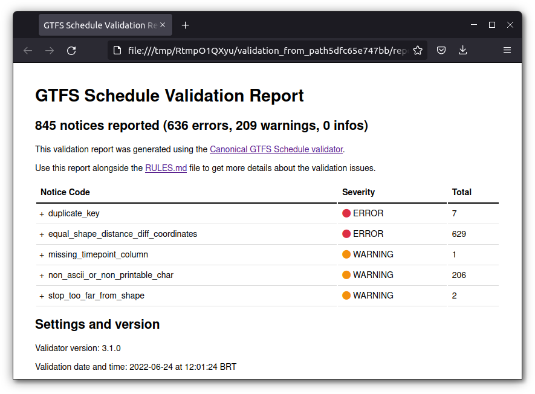

Transport planners and researchers very frequently want to assess the quality of the GTFS feeds they have produced and consumed. Are the feeds structured according to the best practices agreed by members of the larger GTFS community? Are tables and fields adequately formatted? Is the information described in the feed reasonable (vehicle speeds, stop locations, etc.)? These are some of the questions that may arise when dealing with GTFS data.
In order to answer these puzzling questions, gtfstools includes validate_gtfs(), a function that wraps the Canonical GTFS Validator developed by MobilityData. The validator requires Java 11 or higher to run - you can check the version you have currently installed with the command java -version on a terminal session or with the command system("java -version") from your R session. If need be, you can download Java 11 from https://jdk.java.net/java-se-ri/11.
Using validate_gtfs() is very simple and requires no more than a few function calls. First we need to download the validator command-line tool. We can do it manually from MobilityData releases, or we can use download_validator(). This function takes a path to a directory where the validator should be saved to and a validator version, which defaults to the latest release, and returns the path to the downloaded validator. Please note that manually downloaded validators should be saved with the same filename convention used by the function (i.e. gtfs-validator-vX.Y.Z.jar). This is important to make sure that our validation function can correctly parse the command-line tool version, which controls some of its behavior.
library(gtfstools)
latest_validator <- download_validator(tempdir())
latest_validator
#> [1] "/tmp/Rtmp8oBPVL/gtfs-validator-v4.0.0.jar"The second (and final) step is actually running validate_gtfs(). To do that we need some GTFS data, which the function accepts in varying formats: it can be a GTFS object, as created with read_gtfs(), a path to local GTFS file, an URL to a feed or a path to a local directory containing the GTFS data. It also takes a path to the directory where the validator output should be saved to and the path to the validator, previously generated with download_validator(). Let’s see how it works, using the same GTFS data in three different formats:
data_path <- system.file("extdata/spo_gtfs.zip", package = "gtfstools")
path_output_dir <- tempfile("validation_from_path")
validate_gtfs(data_path, path_output_dir, latest_validator)
list.files(path_output_dir)
#> [1] "report.html" "report.json" "system_errors.json"
#> [4] "validation_stderr.txt"As we can see, the validation generates a few output files:
report.html, shown below, summarizes the validation results in a nicely formatted HTML page (only available when using validator v3.1.0 or higher);report.json summarizes the exact same information, but in JSON format, which can be used to easily parse and process the results;system_errors.json summarizes eventual system erros that may have happened during the validation and may compromise the results;validation_stderr.txt lists the informative messages sent by the command-line tool to the standard error output stream, which includes the list of validators in use, eventual error messages, etc;validation_stdout.txt1.
Had we run the validator using the same GTFS data in different formats (an URL or a GTFS object, for example) the results would be exactly the same:
gtfs_url <- "https://github.com/ipeaGIT/gtfstools/raw/master/inst/extdata/spo_gtfs.zip"
gtfs <- read_gtfs(data_path)
url_output_dir <- tempfile("validation_from_url")
validate_gtfs(gtfs_url, url_output_dir, latest_validator)
object_output_dir <- tempfile("validation_from_object")
validate_gtfs(gtfs, object_output_dir, latest_validator)
validation_content <- function(path) {
report_json_path <- file.path(path, "report.json")
suppressWarnings(report_json_content <- readLines(report_json_path))
return(report_json_content)
}
path_output_content <- validation_content(path_output_dir)
url_output_content <- validation_content(url_output_dir)
object_output_content <- validation_content(object_output_dir)
identical(path_output_content, url_output_content)
#> [1] TRUE
identical(path_output_content, object_output_content)
#> [1] TRUEOnce again, it’s important to acknowledge that validate_gtfs() only exists thanks to the hard-work of folks at MobilityData/gtfs-validator. A huge shoutout to them!
Please note that the content of validation_stdout.txt and validation_stderr.txt may slightly vary depending on the version of the validator.↩︎